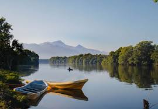
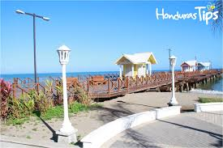

La Ceiba es una ciudad Costera ubicada en la zona norte de Honduras, frente al Mar Caribe y es la cabecera del departamento de Atlántida. Es muy famosa por su exótica belleza natural, su Gran carnaval, su alegría de gente amable que recibe con entusiasmo a todos los visitantes.
 La Ceiba fue declarada municipio el 23 de agosto de 1877, durante el gobierno del Doctor Marco Aurelio Soto, siendo el núcleo del emporio bananero y eje sobre el cual giraba toda la economía regional.
 En la actualidad, La Ceiba es la tercera ciudad y el segundo puerto en importancia del país, supera los 250.000 habitantes en más de 260 barrios y colonias asentados sobre una superficie de aproximadamente 6000 hectáreas.
El clima de La Ceiba está clasificada como el clima ecuatorial que se caracteriza por altas temperaturas y lluvias abundantes. La precipitación anual promedio es 2.858 mm y es la segunda más alta para zonas urbanas en Centroamérica con más de 100.000 personas detrás de Colón, Panamá.